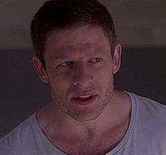
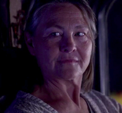

Lacie Pound
Lacie Pound es la protagonista del episodio. Esta joven está obsesionada por aumentar sus estrellas. Ella quiere llegar a la boda de su amiga para así tener una buena reputación y poder escalar socialmente. A lo largo del episodio, varios desafíos hacen que vaya enfrentándose consigo misma.
Naomi Blestow
Naomi Blestow era la mejor amiga de Lacie en la preparatoria. Ella pertenece a la élite social y busca encajar con los estándares sociales. Invita a Lacie a su boda solo por interés. Este personaje, vive pendiente de las apariencias y del que dirán.
Ryan Pound

Ryan Pound es el hermano de Lacie. A este personaje no le importa tener la mejor puntuación, prefiere ser él mismo y que la gente juzgue sus actos. Lacie no puede entender como a su hermano no le importa tener un puntaje inferior a tres estrellas.
Susan Taylor
